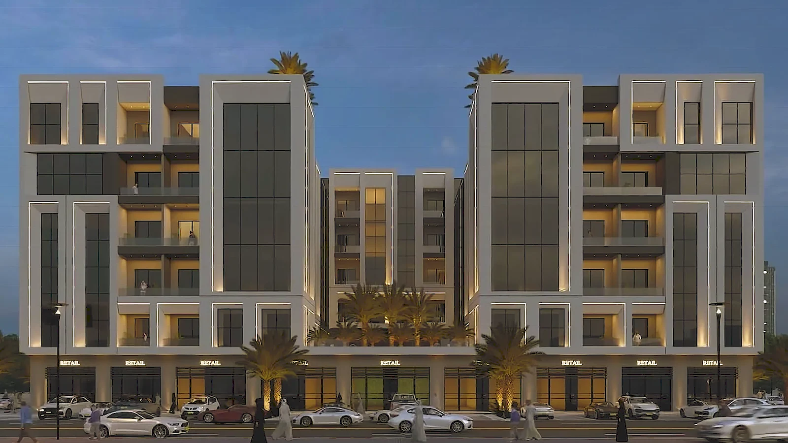
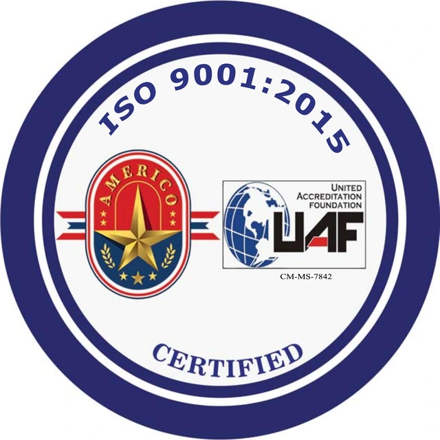
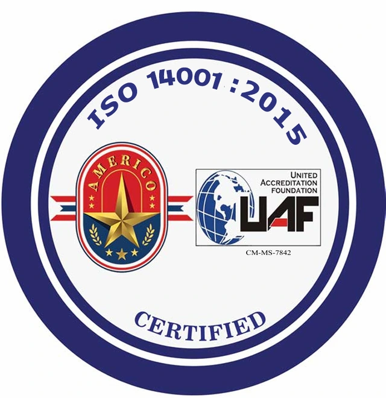
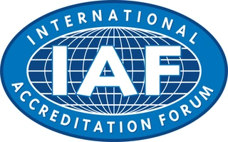

01
التخطيط الحضري
نطوّر مخططات حضرية تربط استعمالات الأراضي بشبكات الحركة والبنية التحتية، لتشكيل بيئات مترابطة تستجيب لاحتياجات المجتمع وتوجّه النمو المستقبلي.

من نحن
في خط الطول للاستشارات الهندسية، نعمل على تشكيل بيئة مبنية ترتقي بجودة الحياة، وتستجيب لتحوّلات المدن والمجتمعات. نجمع العمارة والهندسة والتخطيط في ممارسة متكاملة، تنطلق من سلطنة عُمان برؤية عالمية وفهم راسخ لخصوصية المكان.
نقارب كل مشروع باعتباره منظومة تتكامل فيها احتياجات الإنسان مع متطلبات الموقع والأداء والموارد. ونطوّر حلولنا عبر البحث والتحليل والتصميم، لنمنح كل قرار أساسًا واضحًا، وكل فكرة مسارًا واقعيًا نحو التنفيذ.
طموحنا أن تتجسّد جودة التصميم في تجربة المكان وكفاءته وقدرته على الاستمرار. ولهذا، نربط الرؤية المعمارية بالدقة الهندسية، ونقيّم خياراتنا بما تحققه من قيمة للإنسان والمجتمع والبيئة، اليوم وعلى امتداد عمر المشروع.
الخدمات
نطوّر مخططات حضرية تربط استعمالات الأراضي بشبكات الحركة والبنية التحتية، لتشكيل بيئات مترابطة تستجيب لاحتياجات المجتمع وتوجّه النمو المستقبلي.
نخطّط ونصمّم مرافق الموانئ ومنشآتها البحرية، وفق متطلبات الملاحة والتشغيل وظروف الموقع، لتحقيق الكفاءة التشغيلية وسلامة المنشآت وقابليتها للتوسّع.
نحلّل الأمواج والتيارات وحركة الرواسب وتغيّرات الشواطئ، لتطوير حلول حماية ساحلية تستند إلى فهم العمليات الطبيعية وتوازن بين متطلبات التنمية والبيئة البحرية.
نصمّم شبكات الطرق والمياه والصرف والخدمات ضمن منظومة متكاملة، تراعي كفاءة الأداء وسهولة التشغيل والصيانة وتستوعب احتياجات النمو.
نطوّر تصاميم للمجتمعات السكنية والوجهات السياحية تجمع جودة المكان وكفاءة الاستخدام، وتستمد هويتها من الموقع لتثري تجربة السكن والإقامة.
ندير نطاق المشروع وبرنامجه الزمني وتكلفته ومخاطره، وننسّق بين أطرافه لدعم القرارات وضبط الأداء وتحقيق أهدافه من التخطيط إلى التسليم.
نقيّم الآثار البيئية للمشاريع وحساسية مواقعها، ونضع تدابير التخفيف وخطط الإدارة والمراقبة، لدعم القرارات التصميمية والامتثال للمتطلبات البيئية.
نتابع الأعمال ميدانيًا للتحقّق من مطابقتها للتصاميم والمواصفات المعتمدة، ونراقب الجودة والتقدّم ومتطلبات السلامة، مع معالجة المسائل الفنية حتى التسليم.
أعمال مختارة
شهادات أنظمة الإدارة في الجودة والبيئة والصحة والسلامة المهنية، إلى جانب شعار المنتدى الدولي للاعتماد.

إدارة الجودة
إطار عمل لاتساق العمليات وإدارة الجودة والتحسين المستمر.

الإدارة البيئية
نهج منظّم للمسؤولية البيئية واستخدام الموارد وإدارة الآثار على البيئة.
الصحة والسلامة المهنية
إطار إداري للصحة والسلامة المهنية والوقاية من مخاطر العمل.

المنتدى الدولي للاعتماد
شعار المنتدى الدولي للاعتماد (IAF)، ويختلف عن شهادات أنظمة الإدارة وفق معايير الأيزو.